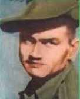
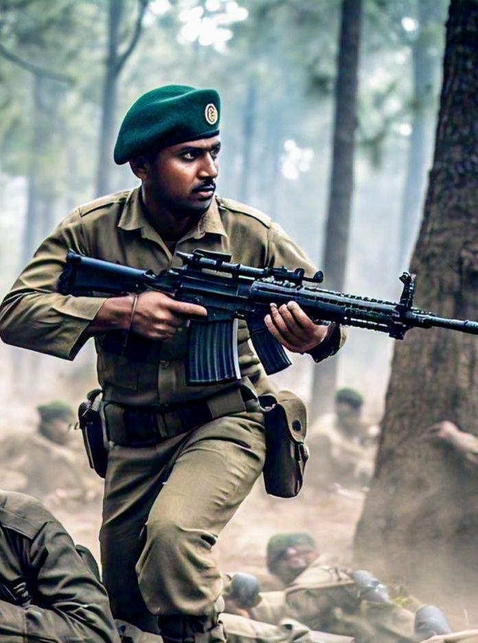
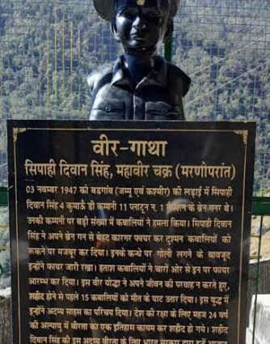

Sepoy Dewan Singh Danu was born on March 4, 1923, in Purdam village of Pithoragarh, Uttarakhand. He went on to become a brave soldier of the Indian Army, serving in the 4th Battalion of the Kumaon Regiment. His bravery and selflessness during the First Kashmir War, particularly in the Battle of Badgam, earned him the Mahavir Chakra award.

This story dates back to November 3, 1947, during the First Kashmir War. Sepoy Dewan Singh Danu, a brave soldier of the 4th Battalion of the Kumaon Regiment, was in the midst of a fierce battle near Badgam, Srinagar. Pakistani tribal forces, numbering over 1,000, were attacking Indian soldiers. Despite being vastly outnumbered, Sepoy Dewan Singh Danu and his company, led by Major Somnath Sharma, refused to give up.
Sepoy Dewan Singh Danu fought valiantly alongside his comrades, firing precise shots from his rifle and killing several tribal fighters. When he spotted a group of tribal fighters attempting to attack his company from behind, he launched a fearless attack, firing his rifle and throwing grenades. His bravery repelled the tribal fighters and saved the lives of his comrades.
During the battle, Major Somnath Sharma sent his final message to Brigade Headquarters, saying, 'The enemy is only 50 yards away. We are completely surrounded. I will not retreat even an inch, but will fight till the last soldier and the last bullet.' Inspired by Major Sharma's bravery, Sepoy Dewan Singh Danu also attacked the enemy, fighting selflessly until the end.

For his bravery, Sepoy Dewan Singh Danu was awarded the Mahavir Chakra. In this battle, 15-22 Indian soldiers were martyred, including Major Somnath Sharma, and 26 were injured. On the other hand, the Pakistani tribal forces suffered heavy losses, with over 200 fighters killed and over 320 injured. Sepoy Dewan Singh Danu's story is an inspiring example of Indian soldiers' bravery and selflessness.
A state high school was established in Birthi, Munsyari, in honor of Deevan Singh Danu.
